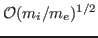
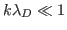

Classical particle-in-cell (PIC) algorithms [1] employ an explicit time integration approach (leap-frog) to advance the Vlasov-Maxwell (or Vlasov-Poisson) system to perform kinetic simulations of plasma physics for a wide range of applications in material processing, fusion, laser-plasma interaction, astrophysics, etc. As in the fluid context, explicit PIC features a numerical stability constraint which enforces a minimum timestep resolution (i.e, the timestep has to be small enough to resolve the fastest time-scale of the system, e.g. light wave propagation). Unlike fluid approaches, however, explicit PIC also features a spatial numerical stability constraint that requires a minimum spatial resolution (i.e., the grid size must be smaller than the Debye length, which is the characteristic length scale of charge separation) to avoid the so-called finite-grid instability. Moreover, it is not yet possible to built in discrete energy conservation by the leap-frog algorithm. The stringent stability constraints make explicit PIC approaches impractical for many realistic multi-scale kinetic problems. The loss of energy conservation after taking very large number of steps makes explicit approaches unsuitable even with future supercompters.
Fully implicit temporal schemes can in principle employ arbitrarily large timesteps without numerical instability. They can also avoid the finite-grid-instability, thus allowing spatial resolution to be dictated by accuracy, not stability. It follows that, by taking time steps and grid sizes much larger than the plasma period and the Debye length, respectively, implicit PIC algorithms can be orders of magnitude more efficient than explicit approaches. This realization motivated the early exploration of various semi-implicit PIC approaches since 1980s [2-5]. Some recent proof-of-principle studies of fully implicit PIC algorithms are beginning to show the algorithmic feasibility of both efficiency and accuracy benefits [7-12].
Our focus of this study is a proof-of-principle, 1D3V (one dimension in space and three dimensions in velocity) electromagnetic model [13] with preconditioning, based on Jacobian-Free Newton-Krylov (JFNK) technology. Our implicit implementation is built on the Vlasov-Darwin system. The Darwin approximation of Maxwell's equations is appropriate for non-radiactive plasma problems by ordering out the light wave, which otherwise suffers radiative noise issues (which can be exaggerative) with relatively large timesteps. Our discrete implementation is exactly energy- and charge-conserving, avoiding particle self-heating and self-cooling. Furthermore, enabled by the implicit Darwin equations, exact conservation of the canonical momentum per particle in any ignorable direction is enforced via a suitable scattering rule for the magnetic field. We have developed a simple preconditioner that targets electrostatic waves and skin currents, which allows us to employ time steps

larger than the explicit CFL for weakly magnetized plasmas. Several 1D numerical experiments demonstrate the (2nd-order) accuracy, efficiency, and conservation properties of the algorithm. In particular, CPU speedups of more than three orders of magnitude vs. an explicit Vlasov-Maxwell solver have been demonstrated in the cold plasma regime (where
).